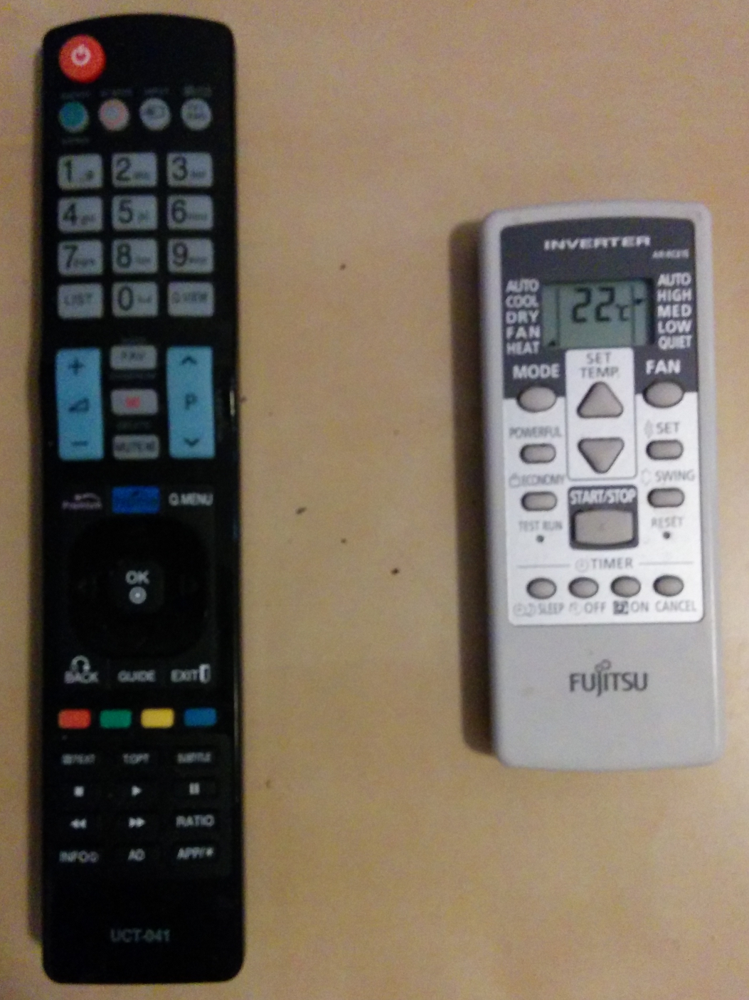
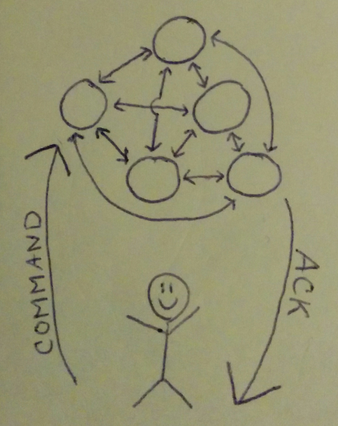

Recently, while operating two different remote-controlled appliances, I realized that it was high time for a discussion about declarative and imperative paradigms. Let’s start by looking at the two remotes:
|  |
| Two different "remotes". The one on the left operates a television, and the one on the right controls a central heating and cooling system. |
At first glance you will notice that one of these remotes is dark, and the other is light. You might also notice that my photography skills are terrible. Neither of these facts is very important to the discussion at hand. Is there anything interesting that you can infer?
Here’s a hint: to both reduce costs, preserve battery life, and to keep the design simple, the manufacturers of these two devices only included infrared transmitters on the two devices. That is to say, there is no infrared receiver built into the remote control units, those are only found on the appliances.
The difference is that the dark coloured television remote control sends commands imperatively, whilst the light coloured climate control system sends them declaratively. What does this mean?
Imperative:
When you press the “increase volume” button on the dark-coloured remote, it sends the equivalent of a literal “increase the volume” command to the television. It has no idea what the previous volume was, or even if the television is powered on.
It is fine to operate this way because the human will discern that an action occurred by an on-screen pop up which informs them about the new volume. If the remote wasn’t properly aimed at the television, then the lack of a feedback loop will probably convince you to repeat the command.
This is not idempotent, and there is always the chance that an erroneous extra command could be sent. (Perhaps the television had a GC pause and didn’t display a notification till some seconds after you had retried the command.) It is not particularly safe, but since we’re changing channels and not launching missiles, it’s not a significant problem.
Declarative:
When you press the “increase temperature” button on the light-coloured remote, it actually sends the entire state as shown on the display including the equivalent of “22oC please”. It is able to remember what it believes to be the previous state by storing this on-board, and it even displays it on the built-in LCD screen.
It is useful to operate in this manner, because the designers decided that it was preferable to view a display which was positioned in your hand, rather than on a fan unit which might be mounted in an awkward area and which could exacerbate neck strain to view.
In this case to provide feedback that the command was actually received, each key press will trigger a “beep” noise from the wall unit, and a brief flash of its power LED. This is idempotent, although the designers didn’t provide a button to “resend state”.
Advantages and disadvantages:
Clearly, it is quite straightforward to imperatively send an action command. This is the common paradigm which we’re usually most comfortable with, and layered beneath a declarative design there usually are some imperative operations. This often works best for low latency operations where feedback is guaranteed.
Anyone who has operated a recent television might remember that they require a few seconds to “start-up”. In my impatience when trying to turn on a television, I’ve pressed the “power button” a second time only to see the television turn itself back off. This is because that button only knows to send a “change power state” command which must be both sent and received in odd quanta to change the (binary) power state.
In the declarative world we always request the desired result, and allow the machine to figure out the mechanism and if an action even needs to be performed at all. (It’s worth mentioning that I could always send a subset of the desired state if sending the full “struct” would be too onerous!) I can however trick the light-coloured remote into displaying an incorrect visual by pressing buttons when it is out of transmitting range of the wall unit. The good news is that this is only due to a lack of bi-directional communication, and isn’t a failure of the declarative paradigm.
Bi-directional communication:
In practice after either an imperative or declarative command is sent, we can usually expect to receive a response, whether it be a 200 OK, or an error message. We’re talking about software and systems engineering now, and while TCP makes everyone’s lives easier, it’s not immune from failure. If the successful ACK message to an imperative command never got delivered (maybe the server crashed after having sent it) and the client repeats the request, you’ve got a possible problem on your hands!
With the declarative message, it’s safe to retry your command ad-nauseum until you’re satisfied you were heard.
Multiple senders:
With a declarative approach it might seem that if two near-simultaneous users send differing commands, the “winner” would overwrite the other users command! It might also seem that this isn’t a problem in imperative systems. It turns out that both these assumptions are wrong.
In the imperative system two independent senders might both decide that the volume wasn’t loud enough. If they were to both send a command, they might now have increased it twice as much as desired and are in a similar situation but with the problem that their ears now hurt.
In the declarative system it is easy to avoid overwriting another users request with a simple CAS system (basically test and set). For any state change command, the user first looks up the current state and gets a unique integer (possibly incremental) that represents the returned state. When the new state is sent, it should include the integer from the previous state, and should know to only process the state change if it currently matches this value. In this manner with simultaneous requests, as long as the endpoint linearizes the requests, only one will succeed, while the others will know that their cached view of the world needs to be refreshed. This might annoy them, but it is the safer mechanism.
Multiple endpoints:
If multiple endpoints form a consistent cluster where all members can serve client requests using a declarative tasking system, the client can send the request to one system, and retrieve the status from someone else. This is particularly useful if the operation might take some time, and there is a chance that the initial endpoint was replaced during this interval.
|  |
| Hand drawn diagram of the scenario. As you can see the user is happy because they are using a declarative paradigm, and are more resistant to failures. |
While this could be replicated to some degree with imperative systems, it’s much more complicated to keep track of whether an operation occurred or not as it’s easier for each cluster member to be able to determine whether the current state matches what’s expected.
Conclusion:
This wasn’t an exhaustive discussion about the topic, but I couldn’t help writing about it since the two paradigms present some interesting engineering questions. As systems become more complex, will the adoption of new methodologies be widespread and expedient, or niche and sluggish?
Some of my declarative work involves my next generation configuration management project! Get involved today!
Happy Hacking,
James
You can hire James and his team at m9rx corporation.
You can follow James on Mastodon for more frequent updates and other random thoughts.
You can follow James on Twitter for more frequent updates and other random thoughts.
You can support James on GitHub if you'd like to help sustain this kind of content.
You can support James on Patreon if you'd like to help sustain this kind of content.
Your comment has been submitted and will be published if it gets approved.
Click here to see the patch you generated.
{kind=link}
{kind=link}
Comments
Nothing yet.
Post a comment